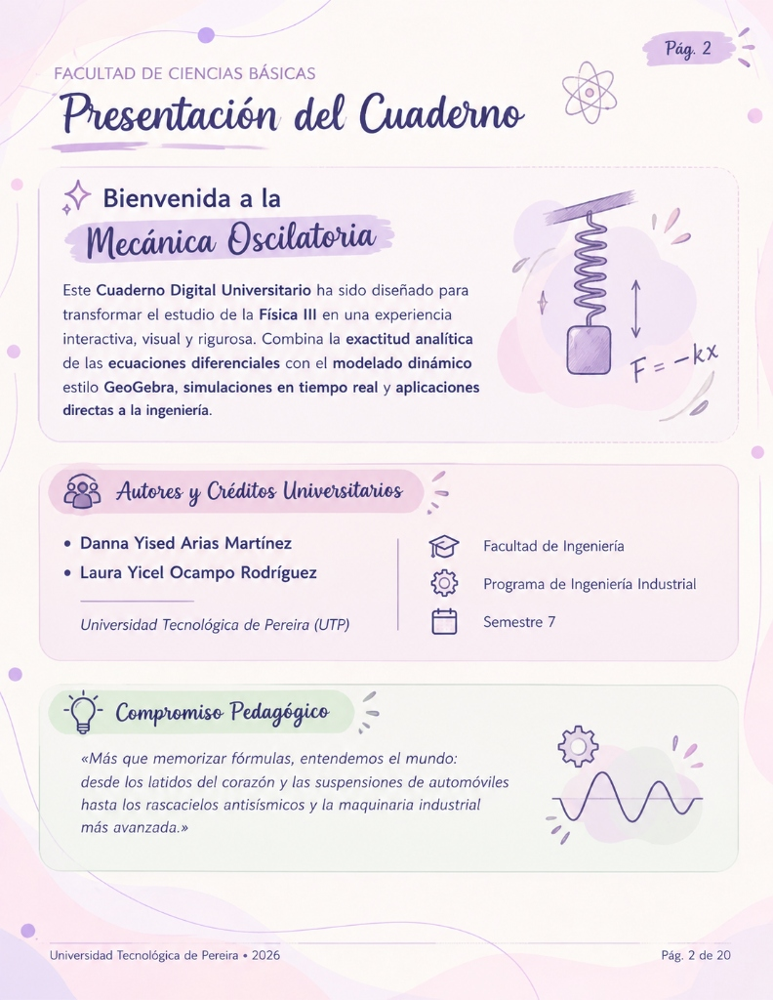
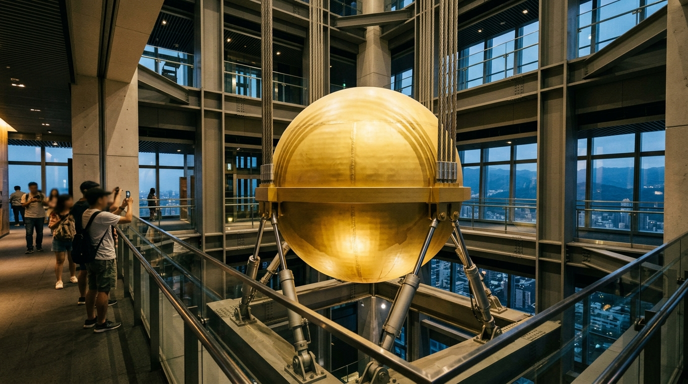

UTP • Plan Curricular Oficial
Pág. 3
Índice General de Estudio
04
📜 Reseña & Línea de Tiempo
Galileo, Hooke, Huygens, Euler
05
🧠 Mapa Mental & Fundamentos
Red ontológica & Mov. Oscilatorio
07
📐 Parámetros & Ley de Hooke
$x, A, T, f, \omega$ & Fuerza restauradora
09
⚡ Ecuación Canónica & Demo EDO
$x(t) = A\cos(\omega t + \phi)$ & Deducción
11
📊 Cinemática & Estados Notables
$v(t), a(t)$ y Balance de Energía $E_m$
13
⚙️ GeoGebra & Simulador 4-en-1
Resorte, Osciloscopio, Fasor MCU
15
🌎 5 Casos Reales de Ingeniería
Suspensión, Taipei 101, Péndulo
17
📝 Ejercicios P43 y P44 (Serway)
Rodillo en MAS & Amortiguamiento
19
📝 Ejercicios P45 y P46 (Serway)
Resortes Paralelo/Serie & Globo Helio
21
📝 Ejercicio P47 (Serway)
Cinemática, Energía & Péndulo
23
⚡ Simulación Conservación Energía
Pozo $U(x)$, $K(x)$, $E_T$, sliders & animación
25
📚 Glosario & Referencias APA
Léxico normativo SI y literatura guía
27
🎓 Agradecimientos & Reflexión
Cierre universitario y mensaje motivacional
Cuaderno estructurado rigurosamente para conectar la teoría diferencial, laboratorios interactivos, ejercicios y fuentes bibliográficas.
🏛️📚
Perspectiva Histórica
Pág. 4
Línea de Tiempo del M.A.S.
1583 • Galileo Galilei — Isocronismo del Péndulo
Catedral de Pisa
Descubrió que el periodo de oscilación es independiente de la amplitud para pequeños ángulos: $T \approx 2\pi\sqrt{L/g}$.
1660 • Robert Hooke — Ley de Elasticidad
$F = -kx$
"Ut tensio, sic vis": la fuerza restauradora es directamente proporcional a la deformación del resorte.
1673 • Christiaan Huygens — Horologium Oscillatorium
Cronometría
Patentó el primer reloj de péndulo y demostró que el péndulo cicloidal es rigurosamente isócrono para cualquier amplitud.
1739 • Leonhard Euler — Formalismo de la EDO
$\ddot{x} + \omega^2 x = 0$
Formuló la ecuación diferencial armónica homogénea y dedujo su solución trigonométrica mediante exponentes complejos.
1822 • Joseph Fourier — Descomposición Armónica
Análisis Espectral
Demostró que cualquier oscilación periódica compleja puede descomponerse como una suma de funciones sinusoidales puras.
Red Conceptual Ontológica
Pág. 5
Mapa Mental del M.A.S.
Fig. 2 Esquema Dinámico: Haz clic en cualquier nodo para explorar su fundamento físico, ecuaciones y unidades normativas del SI:
⚡ Dinámica
Fuerza restauradora lineal $F = -kx$ orientada siempre al equilibrio.
📊 Cinemática
Ecuaciones armónicas continuas para $x(t)$, $v(t)$ y $a(t)$.
🌿 Conservación
Intercambio continuo de energía: $E_m = \frac{1}{2}kA^2 = \text{cte}$.
⚙️ GeoGebra
Modelado interactivo de fasores y plano cartesiano.
Fundamentos Físicos
Pág. 6
Movimiento Oscilatorio y Periódico
El movimiento oscilatorio ocurre cuando un cuerpo o partícula se desplaza repetidamente en torno a una posición central estable llamada posición de equilibrio.
• Propiedades fundamentales: Presencia de una fuerza restauradora que se opone al desplazamiento, alternancia continua entre energía cinética y potencial, y punto de equilibrio estable ($x = 0$).
• Ejemplos en la naturaleza: Cuerda de guitarra en vibración, péndulo de reloj, átomos en una red cristalina y ramas agitadas por el viento.
• Ejemplos en la naturaleza: Cuerda de guitarra en vibración, péndulo de reloj, átomos en una red cristalina y ramas agitadas por el viento.
Un movimiento es periódico si las variables cinemáticas (posición, velocidad y aceleración) se repiten de forma idéntica en intervalos regulares y fijos de tiempo denominados periodo ($T$).
• Ejemplos: La traslación orbital de la Tierra alrededor del Sol ($T = 365.25\text{ d}$), las aspas de un aerogenerador eólico o el giro del cigüeñal de un motor.
Todo movimiento oscilatorio ideal es periódico, pero no todo movimiento periódico es oscilatorio. En el movimiento circular uniforme hay repetición temporal constante, pero no existe vaivén ni inversión en el sentido de la velocidad alrededor del equilibrio.
Cinemática Teórica
Pág. 7
Parámetros del Ciclo Armónico
Posición instantánea vectorial respecto al equilibrio en cualquier instante $t$. Unidad SI: metro ($\text{m}$).
Máximo alejamiento absoluto del equilibrio: $A = |x|_{\max} > 0$. Unidad SI: metro ($\text{m}$).
Tiempo requerido para realizar una oscilación completa: $T = 1/f = 2\pi/\omega$. Unidad SI: segundo ($\text{s}$).
Número de ciclos efectuados por unidad de tiempo: $f = 1/T$. Unidad SI: Hertz ($\text{Hz} = \text{s}^{-1}$).
Rapidez con la que cambia la fase del movimiento en radianes por segundo ($\text{rad/s}$):
Ec. 1
$$\omega = 2\pi f = \frac{2\pi}{T} = \sqrt{\frac{k}{m}} \iff T = 2\pi\sqrt{\frac{m}{k}}$$
📊 Representación Gráfica del Ciclo Periódico Completo
Plano $x$ vs. $t$
Dinámica Clásica
Pág. 8
Dinámica del M.A.S. y Ley de Hooke
Un sistema mecánico ejecuta un Movimiento Armónico Simple (MAS) cuando se desplaza en línea recta bajo la acción exclusiva de una fuerza restauradora proporcional al desplazamiento respecto a su posición de equilibrio y dirigida en sentido opuesto a este.
Ec. 2
$$\vec{F}_{\text{rest}} = -k\vec{x}$$
Donde $k$ es la rigidez elástica ($\text{N/m}$) y el signo negativo garantiza que la fuerza siempre acelera la masa hacia el centro de equilibrio ($x = 0$).
⚡ Criterio Fundamental de Linealidad:
La aceleración instantánea es en todo momento directamente proporcional y de sentido opuesto a la posición: $a(t) = -\frac{k}{m}x(t) = -\omega^2 x(t)$.
Modelado Matemático
Pág. 9
Ecuación Canónica del MAS
Ec. 3
$$x(t) = A\cos(\omega t + \phi)$$
• $A$: Amplitud máxima ($\text{m}$), $A > 0$
• $\omega$: Frecuencia angular ($\text{rad/s}$)
• $(\omega t + \phi)$: Fase total instantánea ($\text{rad}$)
• $\phi$: Fase inicial o constante de fase en $t = 0$
🧭 Proyección del Fasor Giratorio en el Círculo de Referencia
Plano Complejo $\leftrightarrow$ $x(t)$
• Máxima elongación positiva: Si $x(0) = +A$ y parte del reposo ($v_0 = 0$) $\implies \mathbf{\phi = 0}$.
• Paso por el equilibrio hacia la izquierda: Si $x(0) = 0$ y $v_0 = -v_{\max} < 0$ $\implies \mathbf{\phi = \pi/2\text{ rad}}$.
• Máxima elongación negativa: Si $x(0) = -A$ y parte del reposo $\implies \mathbf{\phi = \pi\text{ rad}}$.
• Paso por el equilibrio hacia la izquierda: Si $x(0) = 0$ y $v_0 = -v_{\max} < 0$ $\implies \mathbf{\phi = \pi/2\text{ rad}}$.
• Máxima elongación negativa: Si $x(0) = -A$ y parte del reposo $\implies \mathbf{\phi = \pi\text{ rad}}$.
Cálculo Diferencial
Pág. 10 de 26
Demostración Rigurosa de la EDO
Paso 1: Planteamiento Dinámico (Newton + Hooke)
Dinámica
$$\sum F_x = m a \implies -k x = m \frac{d^2x}{dt^2}$$
Paso 2: Forma Canónica Homogénea
Ec. 4
$$\frac{d^2x}{dt^2} + \frac{k}{m} x = 0 \quad \Longrightarrow \quad \frac{d^2x}{dt^2} + \omega^2 x = 0$$
Paso 3: Polinomio Característico y Raíces Imaginarias
Álgebra
$$r^2 + \omega^2 = 0 \implies r_{1,2} = \pm i \omega$$
Paso 4: Solución Real Mediante Identidad de Euler
Euler
$$x(t) = C_1 e^{i\omega t} + C_2 e^{-i\omega t} = A \cos(\omega t + \phi) \quad \blacksquare$$
Demostración rigurosa que valida que todo oscilador armónico simple es gobernado por una función sinusoidal pura.
Cinemática Diferencial
Pág. 11 de 26
Cinemática: Velocidad y Aceleración
Ec. 5
$$v(t) = \frac{dx}{dt} = -\omega A \sin(\omega t + \phi) = \omega A \cos\left(\omega t + \phi + \frac{\pi}{2}\right)$$
Amplitud máxima $v_{\max} = \omega A$, en adelanto de fase ($\pi/2\text{ rad} = 90^\circ$) respecto a $x(t)$.
Ec. 6
$$a(t) = \frac{dv}{dt} = -\omega^2 A \cos(\omega t + \phi) = -\omega^2 x(t)$$
Amplitud máxima $a_{\max} = \omega^2 A$, en oposición de fase ($\pi\text{ rad} = 180^\circ$) respecto a $x(t)$.
Relaciones en Función de la Posición $x$:
$$v(x) = \pm \omega \sqrt{A^2 - x^2}$$
$$a(x) = -\omega^2 x$$
Estados Notables & Energía
Pág. 12 de 26
Estados Notables y Energía Mecánica
Tabla 1 Comparativa de Estados Notables del MAS
| Punto del Ciclo | Posición $x$ | Velocidad $v$ | Aceleración $a$ | Energía |
|---|---|---|---|---|
| Extremo Derecho | $+A$ (Máx.) | $0$ | $-\omega^2 A$ (Mín.) | $E_p = \frac{1}{2}kA^2, E_k = 0$ |
| Centro de Equilibrio | $0$ | $\pm \omega A$ (Máx.) | $0$ | $E_k = \frac{1}{2}mv_{\max}^2, E_p = 0$ |
| Extremo Izquierdo | $-A$ (Mín.) | $0$ | $+\omega^2 A$ (Máx.) | $E_p = \frac{1}{2}kA^2, E_k = 0$ |
Ec. 7
$$E_m = E_k + E_p = \frac{1}{2} m v^2 + \frac{1}{2} k x^2 = \frac{1}{2} k A^2 = \text{constante}$$
En los extremos ($x = \pm A$), la energía es 100% potencial elástica. En el centro ($x = 0$), es 100% cinética. En puntos intermedios, ambas coexisten sumando invariablemente $\frac{1}{2}kA^2$.
Laboratorio Analítico
Pág. 13 de 26
Plano Cartesiano GeoGebra
Laboratorio Virtual
Pág. 14 de 26
Suite de Simulaciones 4-en-1
Dinámica Real
Cinemática / Fasor
Ingeniería Aplicada • Casos 1 y 2
Pág. 15 de 26
Casos de la Vida Real (1 y 2)
🚗 Caso 1 • Automotriz
Ing. Mecánica
Sistema de Suspensión y Amortiguadores
Resorte helicoidal + amortiguador hidráulico
¿Qué está pasando? El peso del vehículo y las irregularidades de la carretera excitan el resorte en un MAS vertical. El amortiguador introduce disipación viscosa para alcanzar el amortiguamiento crítico.
🎯 Pregunta Rápida de Ingeniería:
🏭 Caso 2 • Industrial
Ing. Industrial
Aislamiento Sísmico y Antivibratorio de Maquinaria
Bancadas elásticas de aislamiento
¿Qué está pasando? Motores y prensas generan fuerzas periódicas. Se montan sobre resortes calculados con $\omega_n \ll \omega_{\text{motor}}$ para evitar la resonancia destructiva.
🎯 Criterio de Diseño Industrial:
Ingeniería Aplicada • Casos 3, 4 y 5
Pág. 16 de 26
Casos 3, 4 y 5 de la Vida Real
🏙️ Caso 3 • Civil y Estructural
Taipei 101
Amortiguador de Masa Sintonizada (TMD)

Esfera de 660 toneladas suspendida entre los pisos 87 y 92
¿Qué está pasando? La esfera actúa como un péndulo sintonizado a la frecuencia natural del rascacielos ($\approx 0.15\text{ Hz}$). Cuando el viento o sismo desplaza la torre, el péndulo oscila en contrafase ($\pi\text{ rad}$) disipando la energía cinética.
🎯 Pregunta de Ingeniería Estructural:
🕰️ Caso 4 • Cronometría de Precisión
Mecanismo de Escape
Mecanismo de Escape en Relojes de Péndulo
Péndulo isócrono calibrado con longitud $L \approx 0.994\text{ m}$
¿Qué está pasando? Para un péndulo de $L = 0.994\text{ m}$, el semiperiodo es exactamente $1\text{ segundo}$ ($T = 2\text{ s}$). El mecanismo de escape transmite pequeños impulsos de energía de las pesas para contrarrestar la fricción del aire.
🎯 Pregunta de Calibración:
🎸 Caso 5 • Acústica Musical
Ondas Estacionarias
Vibración y Modos Normales en Instrumentos
Ondas estacionarias con frecuencia fundamental $f_1 = \frac{v}{2L}$
¿Qué está pasando? Cada segmento infinitesimal de la cuerda ejecuta un MAS transversal a la frecuencia $f_n = \frac{n}{2L}\sqrt{\frac{T_{\text{tensión}}}{\mu}}$. La caja de resonancia amplifica las ondas sonoras audibles.
🎯 Pregunta de Acústica Aplicada:
Problemas Resueltos • Serway P15.43
Pág. 17 de 26
Problema 43: Rodillo de Jardín en M.A.S.
Enunciado (Serway P15.43): Un rodillo pesado ($M = 400\text{ kg}$) rueda sin deslizar sobre el suelo conectado a un resorte ($k = 3500\text{ N/m}$) sujeto a un poste. Se tira una vez y se deja oscilar durante 10 pasadas sobre el césped. ¿Cuánto tiempo tendrá para relajarse antes de mover el poste?
👨🏫 Explicación Magistral: Deducción por Conservación de Energía
1. Al rodar sin deslizar, la energía cinética total incluye traslación y rotación:
$$E = \frac{1}{2} M v^2 + \frac{1}{2} I \omega_{\text{rot}}^2 + \frac{1}{2} k x^2 = \frac{1}{2} M v^2 + \frac{1}{4} M v^2 + \frac{1}{2} k x^2 = \mathbf{\frac{3}{4} M v^2 + \frac{1}{2} k x^2}$$
2. Derivando respecto al tiempo $\frac{dE}{dt} = 0$:
$$\frac{3}{2} M v \frac{dv}{dt} + k x v = 0 \implies a = -\frac{2k}{3M} x \implies \omega = \sqrt{\frac{2k}{3M}}$$
3. El período de oscilación es: $\mathbf{T = 2\pi \sqrt{\frac{3M}{2k}} = 2\pi \sqrt{\frac{3(400)}{2(3500)}} \approx 2.60\text{ s}}$.
🎛️ Laboratorio Interactivo: Varía los Parámetros del Rodillo
Tiempo en vivo
Período: 2.600 s
Frec. Angular: 2.415 rad/s
Tiempo Relax: 13.00 s (5 ciclos)
Problemas Resueltos • Serway P15.44
Pág. 18 de 26
Problema 44: ¿Por qué es Imposible?
Enunciado (Serway P15.44): Un oscilador microscópico ($k = 10.0\text{ N/m}$, $m = 1.00\text{ g}$) debe realizar muchas oscilaciones conforme su amplitud cae al 25% en $23.1\text{ ms}$. Para acelerar el decaimiento, un ingeniero propone duplicar la constante de amortiguamiento $b$. ¿Por qué esta situación es físicamente imposible?
👨🏫 Análisis Riguroso del Profesor: El Límite Crítico $b_c$
1. Para decaer a $25\%$ en $t_1 = 23.1\text{ ms}$:
$$A(t_1) = A_0 e^{-\frac{b}{2m}t_1} = 0.25 A_0 \implies b = \frac{2m \ln(4)}{t_1} = \frac{2(0.001)\ln(4)}{0.0231} = \mathbf{0.120\text{ kg/s}}$$
2. Calculamos el amortiguamiento crítico del oscilador:
$$b_c = 2\sqrt{km} = 2\sqrt{(10.0)(0.001)} = 2\sqrt{0.01} = \mathbf{0.200\text{ kg/s}}$$
3. Si el ingeniero duplica $b$: $\mathbf{b' = 2b = 0.240\text{ kg/s}}$.
4. ¡CONTRADICCIÓN FÍSICA INELUDIBLE! Como $b' = 0.240\text{ kg/s} > b_c = 0.200\text{ kg/s}$, el sistema pasa a régimen SOBREAMORTIGUADO. El objeto se frena exponencialmente y NUNCA oscila.
🎛️ Prueba el Factor de Amortiguamiento $b$:
Factor: 0.120 kg/s (1.0×)
Problemas Resueltos • Serway P15.45
Pág. 19 de 26
Problema 45: Resortes en Paralelo y Serie
Enunciado (Serway P15.45): Un bloque de masa $m$ se conecta a dos resortes ($k_1$ y $k_2$) de dos formas: (a) Lados opuestos (paralelo) y (b) En línea (serie). Demuestre que en ambos casos el movimiento es armónico simple y halle los períodos $T_a$ y $T_b$.
👨🏫 Demostración Rigurosa del Profesor
• Caso (a) Paralelo: Desplazar $x$ comprime un resorte y estira el otro. Ambas fuerzas restauradoras empujan en el mismo sentido:
$$F_{\text{neta}} = -k_1 x - k_2 x = -(k_1+k_2)x \implies \mathbf{T_a = 2\pi \sqrt{\frac{m}{k_1+k_2}}}$$
• Caso (b) Serie: La fuerza $F$ en ambos resortes es idéntica ($F = -k_1 x_1 = -k_2 x_2$), y el desplazamiento total es $x = x_1 + x_2 = -F(1/k_1 + 1/k_2)$:
$$k_{\text{eq}} = \frac{k_1 k_2}{k_1 + k_2} \implies \mathbf{T_b = 2\pi \sqrt{\frac{m(k_1+k_2)}{k_1 k_2}}}$$
$T_a$ (Paralelo): 0.281 s
$T_b$ (Serie): 0.574 s
2.04× más lento
Problemas Resueltos • Serway P15.46
Pág. 20 de 26
Problema 46: Péndulo Invertido de Helio
Enunciado (Serway P15.46): Un globo ligero de helio ($\rho_{ ext{He}} = 0.179 ext{ kg/m}^3$) se ata a una cuerda de $L = 3.00 ext{ m}$ fija al piso (péndulo invertido). Con $\rho_{ ext{aire}} = 1.20 ext{ kg/m}^3$, (a) demuestre que el movimiento es armónico simple y (b) determine su período $T$.
👨🏫 Demostración Formal: Fuerza de Flotación y Torque Restaurador
1. Fuerza neta boyante hacia arriba: $F_{\text{boy}} = B - w = (\rho_{\text{aire}} - \rho_{\text{He}}) V g$.
2. Al desplazar un ángulo $\theta$, el torque restaurador hacia la vertical es:
$$\tau = -(B - w) L \sin\theta \approx -(\rho_{\text{aire}} - \rho_{\text{He}}) V g L \theta$$
3. Como el momento de inercia es $I = m L^2 = (\rho_{\text{He}} V) L^2$, aplicando $\Sigma \tau = I \alpha$:
$$\frac{d^2\theta}{dt^2} + \left[\frac{(\rho_{\text{aire}} - \rho_{\text{He}}) g}{\rho_{\text{He}} L}\right]\theta = 0 \implies \mathbf{T = 2\pi \sqrt{\frac{\rho_{\text{He}} L}{(\rho_{\text{aire}} - \rho_{\text{He}}) g}}}$$
4. Con los datos: $\mathbf{T = 2\pi \sqrt{\frac{(0.179)(3.00)}{(1.20 - 0.179)(9.80)}} \approx 1.46\text{ s}}$.
Frecuencia $\omega$: 4.318 rad/s
Período $T$: 1.455 s
(vs 3.477 s péndulo común)
Problemas Resueltos • Serway P15.47 (Parte 1)
Pág. 21 de 26
Problema 47: Cinemática del M.A.S.
Enunciado (Serway P15.47): Una partícula de $m = 0.500\text{ kg}$ se une a un resorte con $k = 50.0\text{ N/m}$. En $t = 0$, tiene su rapidez máxima de $20.0\text{ m/s}$ moviéndose hacia la izquierda.
(a) Determine la ecuación de posición $x(t)$.
(a) Determine la ecuación de posición $x(t)$.
👨🏫 Paso a Paso: Determinación de la Ecuación Canónica
1. Frecuencia angular $\omega$:
$$\omega = \sqrt{\frac{k}{m}} = \sqrt{\frac{50.0\text{ N/m}}{0.500\text{ kg}}} = \mathbf{10.0\text{ rad/s}}$$
2. Amplitud $A$: Como la rapidez en el equilibrio es máxima ($v_{\text{máx}} = \omega A$):
$$A = \frac{v_{\text{máx}}}{\omega} = \frac{20.0\text{ m/s}}{10.0\text{ rad/s}} = \mathbf{2.00\text{ m}}$$
3. Fase inicial $\phi$: $x(0) = A\cos\phi = 0 \implies \phi = \pi/2$.
Verificamos velocidad: $v(0) = -A\omega\sin(\pi/2) = -(2)(10)(1) = -20\text{ m/s}$ (correcto hacia la izquierda). $$\mathbf{x(t) = 2.00\cos\left(10.0 t + \frac{\pi}{2}\right) = -2.00\operatorname{sen}(10.0 t)\text{ m}}$$
Verificamos velocidad: $v(0) = -A\omega\sin(\pi/2) = -(2)(10)(1) = -20\text{ m/s}$ (correcto hacia la izquierda). $$\mathbf{x(t) = 2.00\cos\left(10.0 t + \frac{\pi}{2}\right) = -2.00\operatorname{sen}(10.0 t)\text{ m}}$$
Problemas Resueltos • Serway P15.47 (Parte 2)
Pág. 22 de 26
Problema 47: Energía & Péndulo Equivalente
👨🏫 Resolución de Literales (b), (c) y (d)
• (b) ¿Dónde la Energía Potencial es el triple de la Cinética ($E_p = 3 E_k$)?
$$E_m = E_p + E_k = 3E_k + E_k = 4E_k \implies E_p = \frac{3}{4} E_m$$
$$\frac{1}{2} k x^2 = \frac{3}{4} \left(\frac{1}{2} k A^2\right) \implies x = \pm \frac{\sqrt{3}}{2} A = \pm \frac{\sqrt{3}}{2}(2.00) = \mathbf{\pm \sqrt{3}\text{ m} \approx \pm 1.732\text{ m}}$$
• (c) Tiempo mínimo para moverse de $x = 0$ a $x = 1.00\text{ m}$ (en valor absoluto):
$$|x(t)| = A\operatorname{sen}(\omega t) \implies 1.00 = 2.00\operatorname{sen}(10.0 t) \implies 10.0 t = \frac{\pi}{6} \implies \mathbf{t = \frac{\pi}{60}\text{ s} \approx 0.0524\text{ s} = 52.4\text{ ms}}$$
• (d) Longitud de un Péndulo Simple con el mismo período:
$$\omega_{\text{péndulo}} = \sqrt{\frac{g}{L}} = 10.0\text{ rad/s} \implies L = \frac{g}{\omega^2} = \frac{9.80}{100} = \mathbf{0.0980\text{ m} = 9.80\text{ cm}}$$
🎛️ Calculadora y Explorador del Problema 47:
Ecuación: x(t) = -2.00·sen(10t) m
Posición $E_p=3E_k$: ±1.732 m
Tiempo $0 \to 1\text{m}$: 52.4 ms
Long. Péndulo: 9.80 cm
¡5 Ejercicios de Examen Dominados con Éxito!
Física III • Mecánica Oscilatoria • Universidad Tecnológica de Pereira
🎓✨
Simulador Interactivo • Física III • UTP
Conservación de la Energía en el M.A.S.
TIEMPO REAL
Pág. 23
$K(x) = \frac{1}{2}k(A^2 - x^2)$
$E_T = \frac{1}{2}kA^2 = \text{cte}$
🎛️ Parámetros del Sistema
Amplitud ($A$):
2.0 m
Frecuencia ($\omega$):
2.0 rad/s
Masa ($m$):
1.0 kg
Rigidez ($k$):
4.0 N/m
⏯️ Controles de Simulación
Velocidad de reproducción:
🎨 Leyenda de Curvas
Potencial $U(x) = \frac{1}{2}kx^2$
Cinética $K(x) = \frac{1}{2}mv^2$
Mecánica Total $E_T$
Partícula $m$ (Arrastrable)
Termodinámica & Mecánica Clásica
Pág. 24
Balance y Pozo de Potencial en el M.A.S.
1. Estructura del Pozo Parabólico
Pozo Cuadrático
En ausencia de fuerzas no conservativas (como fricción o arrastre viscoso), la energía potencial elástica $U(x) = \frac{1}{2}kx^2$ confina a la partícula a oscilar exclusivamente entre los puntos de retorno clásicos $x = -A$ y $x = +A$.
📊 Partición Energética en Puntos Notables del Ciclo
| Posición $x$ | Energía Potencial $U$ | Energía Cinética $K$ | Energía Total $E_T$ |
|---|---|---|---|
| $x = \pm A$ (Extremos) | $E_T = \frac{1}{2}kA^2$ (100%) | $0$ (0%) | $E_T$ |
| $x = 0$ (Equilibrio) | $0$ (0%) | $E_T = \frac{1}{2}mv_{\max}^2$ (100%) | $E_T$ |
| $x = \pm \frac{A}{\sqrt{2}} \approx \pm 0.707A$ | $\frac{1}{2}E_T$ (50%) | $\frac{1}{2}E_T$ (50%) | $E_T$ |
3. Deducción de la Velocidad $v(x)$ por Conservación
Cálculo Directo
$$\frac{1}{2}mv^2 + \frac{1}{2}kx^2 = \frac{1}{2}kA^2 \implies v(x) = \pm \sqrt{\frac{k}{m}(A^2 - x^2)} = \pm \omega \sqrt{A^2 - x^2}$$
Esta expresión demuestra que la rapidez es independiente del sentido del movimiento y simétrica respecto al origen de coordenadas.
¡Conservación Energética Validada!
La transformación continua entre $U$ y $K$ fundamenta la perpetuidad del ciclo armónico ideal.
⚙️📐
Léxico Técnico
Pág. 25 de 28
Glosario Académico del M.A.S.
1. Elongación ($x$)
[m]
Desplazamiento vectorial instantáneo respecto al equilibrio en cualquier instante $t$.
2. Amplitud ($A$)
[m]
Máximo alejamiento escalar respecto a la posición central de equilibrio: $A = |x|_{\max} > 0$.
3. Periodo ($T$)
[s]
Tiempo invertido por el sistema en ejecutar un ciclo completo de oscilación ($T = 2\pi/\omega$).
4. Frecuencia ($f$)
[Hz]
Número de oscilaciones completas efectuadas por unidad de tiempo: $f = 1/T = \omega/(2\pi)$.
5. Frecuencia Angular ($\omega$)
[rad/s]
Rapidez de rotación del vector fasor asociado al movimiento: $\omega = \sqrt{k/m}$.
6. Fase Inicial ($\phi$)
[rad]
Ángulo de desfase que describe la posición y dirección de movimiento en $t = 0$.
7. Constante Elástica ($k$)
[N/m]
Medida cuantitativa de la rigidez del resorte o medio deformante elástico.
8. Fuerza Restauradora ($\vec{F}$)
[N]
Fuerza dirigida invariablemente hacia el equilibrio que origina el vaivén periódico.
Fuentes Académicas • Normas APA 7.ª Edición
Pág. 26 de 28
Referencias Bibliográficas
1. Física para Ciencias e Ingeniería
Texto Guía
Serway, R. A., & Jewett, J. W. (2018). Física para ciencias e ingeniería (10.ª ed., Vol. 1). Cengage Learning. Capítulo 15: Movimiento oscilatorio, Ley de Hooke y energía del MAS (pp. 445–478).
2. Mecánica, Oscilaciones y Ondas
Dinámica
Tipler, P. A., & Mosca, G. (2021). Física para la ciencia y la tecnología: Mecánica, oscilaciones y ondas (6.ª ed., Vol. 1). Editorial Reverté. Capítulo 14: Oscilaciones armónicas y amortiguamiento (pp. 451–488).
3. Fundamentos de Física Clásica
Resonancia
Halliday, D., Resnick, R., & Walker, J. (2018). Fundamentos de Física (10.ª ed., Vol. 1). Grupo Editorial Patria. Capítulo 15: Oscilaciones forzadas y resonancia (pp. 413–444).
4. Vibraciones y Ondas (Curso MIT)
MIT Physics
French, A. P. (2012). Vibraciones y ondas: Curso de física del MIT. Editorial Reverté. Capítulos 1–3: Movimientos periódicos y superposición de osciladores armónicos (pp. 3–92).
Universidad Tecnológica de Pereira (UTP) • 2026
Facultad de Ingeniería • Programa de Ingeniería Industrial • Semestre 7
Autoras: Danna Yised Arias Martínez & Laura Yicel Ocampo Rodríguez
Autoras: Danna Yised Arias Martínez & Laura Yicel Ocampo Rodríguez
UTP